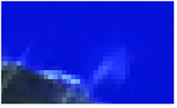
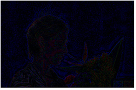

要查看结果:
| 1。 | 放大以查看结果。 |
| 2. | 要将去噪图像与原始图像进行比较，请按 D 在去噪节点上重复禁用和重新启用它。 |
|
|
 |
| 原始图像。 | 去噪图像。 |
| 3. | 查看从原始图像中删除的噪声也很有用。要这样做，设置 输出 到 噪音 . |
此图像中只有噪声可见。如果你能看到很多图片细节，这意味着当前的设置使得去噪工作变得太难，并且删除了太多的图像，这导致了一个柔和的结果。
|
 |
|
如果你能在
噪音 输出，图像太多 正在被移除。 |
| 4. | 要强调细节并高亮显示保留的边缘，可以临时设置 锐化 到更高的值。这将影响落在上方的任何像素 滚动 关闭 阈值。默认值 0 不应用锐化。 |
| 5. | 要将去噪亮度与图像的原始亮度混合，可以暂时增加 亮度混合 。这将返回结果中的一些图像细节。例如，当你正在处理去噪镜头时，你可能想把这个设置为 1，但是对于最终的结果，你会想减少它。默认值为 0.7。 |
| 6. | 如果你对结果不满意，你可以尝试: |
• 将分析框移动到图像的不同平坦区域,
• 分析不同的框架 (通过移动到不同的框架并单击 分析噪音 )，或
• 调整去噪控制 ( 去噪量 , 滚开 ,和 平滑度 特别是)。继续到 微调 .
|
|